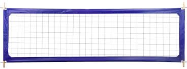

Volleyball Page

Menu
My Resume | Custom Budgeting App
Volleyball Beginnings
Volleyball was invented in 1895 by William G. Morgan, a YMCA physical education instructor in Massachusetts, who wanted a less intense alternative to James Naismith’s basketball. He originally called the game “Mintonette” because it resembled badminton with a net and volleying action. In 1896, the name “volleyball” was suggested after observers noticed how the ball was continuously volleyed back and forth. Early versions of the sport had fewer rules, allowed unlimited players, and used a heavier ball. The game quickly spread through YMCA networks across the United States and into countries like Canada and Cuba. As it expanded internationally, standardized rules were gradually introduced, including six players per team and a rotation system. During World War I and World War II, soldiers played volleyball recreationally, helping spread it across Europe and Asia. Different regions began to shape the sport, with countries like Japan emphasizing speed and defense while others focused on power. In 1947, the Fédération Internationale de Volleyball (FIVB) was formed to oversee global competition and unify rules. The first men’s World Championship took place in 1949, followed by the women’s championship in 1952. Volleyball reached a major milestone when it was added to the Olympic Games in 1964 in Tokyo. Today, volleyball is one of the most popular sports in the world, played both indoors and on beaches with millions of participants globally.

Volleyball Positions
In volleyball, each team has six players on the court, and each position has a specialized role that keeps the team organized and effective. The three front-row positions are the outside hitter, middle blocker, and opposite hitter, while the three back-row positions include the setter, libero, and defensive specialist. Together, these roles balance offense, defense, and ball control.
The outside hitter, sometimes called the left-side hitter, is usually the team’s primary attacker and most consistent player. They receive serves, play defense, and take many of the team’s attacks from the left side of the court. The middle blocker plays near the net in the center and focuses on blocking the opponent’s hitters while also running quick attacks. The opposite hitter plays on the right side and is often a strong attacker and blocker, helping defend against the other team’s outside hitter.
The setter is often considered the “quarterback” of the team because they control the offense by deciding who gets the ball. They touch the ball on almost every play, setting it up for hitters in the best position to score. The libero is a defensive specialist who wears a different colored jersey and plays only in the back row, focusing on passing, digging, and keeping the ball in play. Finally, the defensive specialist is similar to the libero but does not have the same restrictions or jersey, and they are used to strengthen back-row defense and serve receive when needed.
Sand Volleyball
Sand volleyball is a uniquely demanding sport that strips the game down to its purest form. With only two players per side, every athlete must be a complete player — comfortable passing, setting, attacking, and defending without the luxury of specialization. The beach environment adds a layer of challenge that indoor courts simply can't replicate: shifting sand absorbs energy with every step, making movement exhausting and jumps harder to generate. Players must also contend with outdoor elements like wind and sun, which can dramatically affect serve trajectories and aerial plays. Despite the physical demands, sand volleyball has a distinctly relaxed, social atmosphere — matches are often played barefoot on the beach, with a laid-back energy that sets it apart from more structured indoor competition.
Top Players in the world
-
Men's Players
- Alessandro Michieletto (Italy)
- Aleksandar Nikolov (Bulgaria)
- Simone Giannelli (Italy)
- Jakub Kochanowski (Poland)
- Wilfredo León (Poland)
- Women's Players
- Monica De Gennaro (Italy)
- Ekaterina Antropova (Italy)
- Gabriela Guimarães (Brazil)
- Alessia Orro (Italy)
- Adenízia Silva (Brazil)
Volleyball Stats